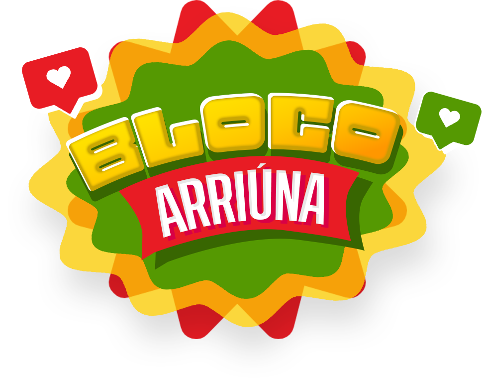

Datas
21 e 22 de março
Carnaval do movimento junino
Ponto de encontro do movimento junino no Carnaval, com identidade própria, ocupação de rua e celebração da cultura popular.

Registros da pista, do público e da identidade visual do bloco em uma composição mais limpa.


Datas
21 e 22 de março
Cidade
Paranoá/DF
Edição/Referência
2ª edição
Participação
Quadrilhas e público
O Bloco Arriúna é o bloco de Carnaval do movimento junino. Ele reforça uma ligação histórica do DF entre quadrilhas, blocos e escolas de samba.
Projeto consolidado pelo próprio movimento junino como celebração coletiva e ponto de presença cultural no calendário do DF.
| Data | Cidade | Ação |
|---|---|---|
| 21 de março | Paranoá/DF | Bloco Arriúna |
| 22 de março | Paranoá/DF | Bloco Arriúna |
Paranoá/DF
BlocoParanoá/DF
Bloco